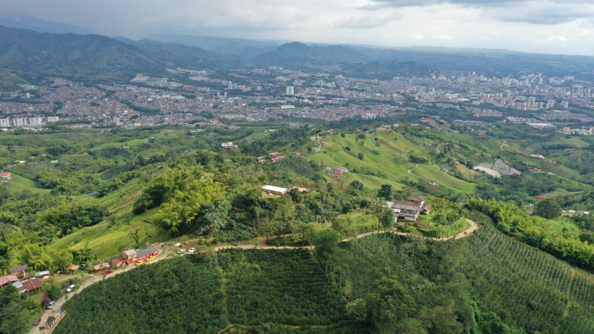
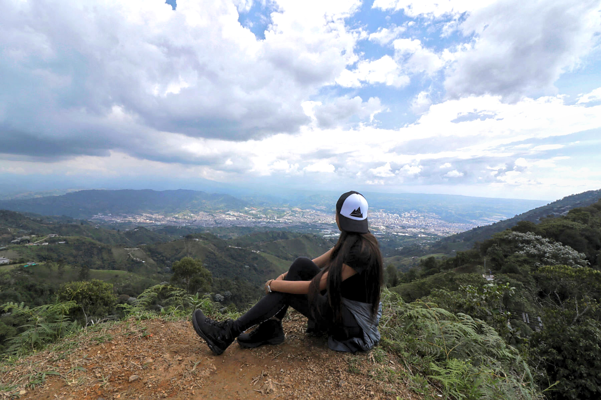
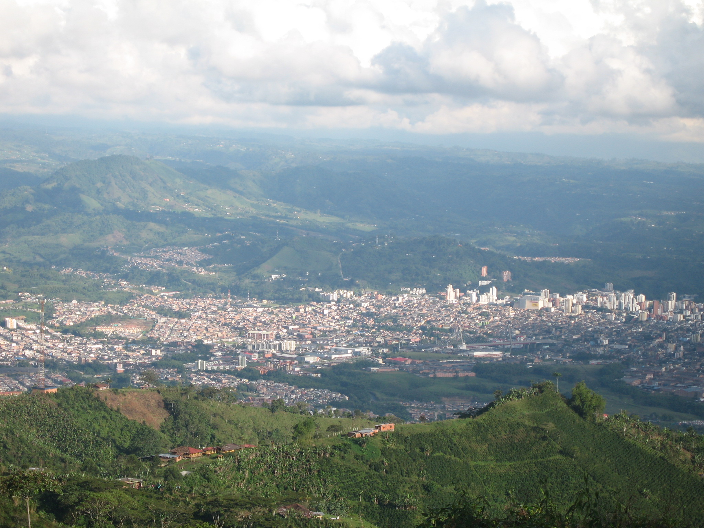

Alto Del Nudo
Dosquebradas, Risaralda




Descripción
El Alto del Nudo es una reserva natural regional en la Serranía El Nudo, en el departamento de Risaralda, Colombia. Es un lugar de gran biodiversidad, con senderos ecológicos y miradores que ofrecen vistas espectaculares del paisaje circundante.
Características
- 🌿 Reserva natural
- 🦜 Gran biodiversidad
- 🌄 Miradores panorámicos
- 🚶♂️ Senderos ecológicos
- 📸 Puntos fotográficos
- 🏃♂️ Actividades al aire libre
- 🌳 Flora y fauna nativa
Horarios y Precios
Horario:
6:00 AM - 5:00 PM
Días:
Todos los días
Entrada:
Gratuita
Restaurantes cercanos
-
El Nudo Cocina y Café
- Asados al barril y café de origen
- Eventos personalizados en entorno natural
- Servicio de alojamiento disponible
-
La Wayra Casa de Campo
- Ubicación: Vereda Santana Alta, km 7 vía al Chaquiro
- Gastronomía tradicional
- Ambiente campestre acogedor
-
Mirador Dos Cosechas
- Restaurante, café especial y bar
- Vistas panorámicas del paisaje cafetero
- Tours cafeteros disponibles
-
Finca El Bosque
- Ubicación: Serranía del Alto del Nudo
- Restaurante campestre
- Gastronomía local en entorno natural
Alojamientos cercanos
-
Cabaña Alto del Nudo
- Ubicación: Vía Llano Grande, Alto del Nudo
- Vistas panorámicas
- Entorno tranquilo
-
Los Nieblos - El Nudito
- Chalet con jardín y terraza
- Bar y cocina equipada
-
Finca Hotel Villa Ilusión
- Ubicación: Dosquebradas
- Vistas hacia Pereira y el Nevado del Ruiz
-
GURUS FR
- A 4 km del Parque Regional Natural
- Cerca del centro comercial Arboleda
-
Ayenda 1138 Apartahotel 109
- Ubicación: Dosquebradas
- Estacionamiento disponible
- Cerca del Parque Regional Natural